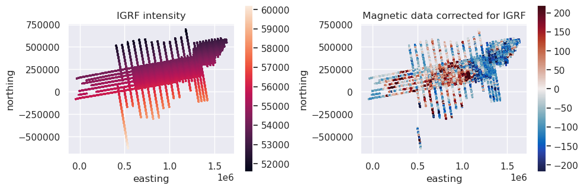
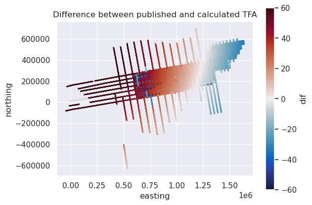
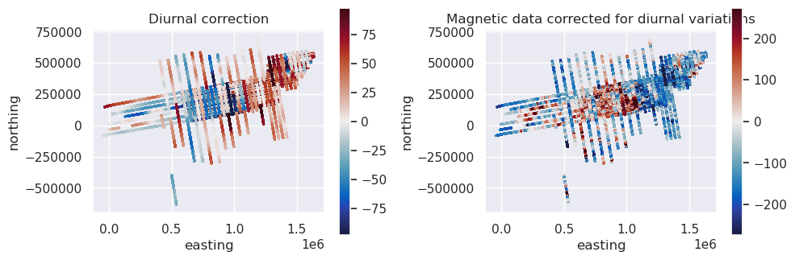
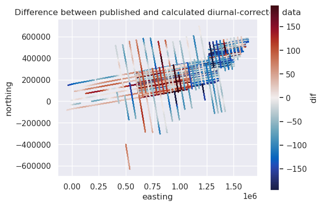
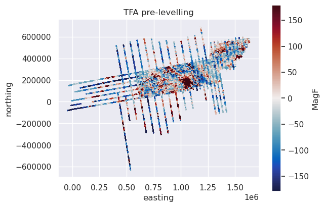

Process the AGAP airborne magnetic data#
We try to recreate the BAS processing steps, as outlined here: https://data.bas.ac.uk/full-record.php?id=GB/NERC/BAS/PDC/01308
[1]:
# %load_ext autoreload
# %autoreload 2
import cmocean
import matplotlib.pyplot as plt
import numpy as np
import pandas as pd
import verde as vd
import airbornegeo
Load data#
This is a subset of the BAS AGAP survey over Antarctica’s Gamburtsev Subglacial Mountains. The file is download and subset in the notebook AGAP_magnetic_survey.
[2]:
data_df = pd.read_csv("data/AGAP_magnetic_survey.csv")
data_df = data_df[
[
"Lon",
"Lat",
"Height_WGS1984",
"Date",
"Time",
"unixtime",
"easting",
"northing",
"line_name",
"line",
"MagR", # raw magnetic field intensity
"MagC", # compensated or low pass filtered (some dummies)
"RefField", # IGRF intensity
# 'TCorr', # Tip tanks?
"MagRTC", # TFA
"BCorr_AGAP_N", # 60 min low pass filter magnetic base station
"BCorr_AGAP_NS",
"BCorr_AGAP_S",
"BCorr_AGAP_SP",
"BCorr_Applied", # combined base stations
"MagBRTC", # MagRTC - Bcorr_Applied
"ACorr", # heading error correction
"SCorr", # ?
"MagF", # final TFA before levelling
"MagL", # cross-over levelled
"MagML", # microlevelled
]
]
print(data_df.columns)
data_df.head()
Index(['Lon', 'Lat', 'Height_WGS1984', 'Date', 'Time', 'unixtime', 'easting',
'northing', 'line_name', 'line', 'MagR', 'MagC', 'RefField', 'MagRTC',
'BCorr_AGAP_N', 'BCorr_AGAP_NS', 'BCorr_AGAP_S', 'BCorr_AGAP_SP',
'BCorr_Applied', 'MagBRTC', 'ACorr', 'SCorr', 'MagF', 'MagL', 'MagML'],
dtype='str')
[2]:
| Lon | Lat | Height_WGS1984 | Date | Time | unixtime | easting | northing | line_name | line | ... | BCorr_AGAP_NS | BCorr_AGAP_S | BCorr_AGAP_SP | BCorr_Applied | MagBRTC | ACorr | SCorr | MagF | MagL | MagML | |
|---|---|---|---|---|---|---|---|---|---|---|---|---|---|---|---|---|---|---|---|---|---|
| 0 | 75.635600 | -84.104393 | 4109.4 | 2008-12-17 | 0 days 07:53:42 | 1.229500e+09 | 621072.177354 | 159052.962392 | DA500_11.0 | 1 | ... | NaN | NaN | 18.04 | -18.04 | -8.00 | 8.32 | -32.96 | -32.96 | -22.30 | NaN |
| 1 | 75.636138 | -84.103897 | 4111.5 | 2008-12-17 | 0 days 07:53:43 | 1.229500e+09 | 621126.010622 | 159060.533993 | DA500_11.0 | 1 | ... | NaN | NaN | 18.01 | -18.01 | -8.82 | 7.47 | -33.81 | -33.81 | -23.06 | NaN |
| 2 | 75.636699 | -84.103403 | 4113.6 | 2008-12-17 | 0 days 07:53:44 | 1.229500e+09 | 621179.696916 | 159067.801202 | DA500_11.0 | 1 | ... | NaN | NaN | 17.98 | -17.98 | -9.66 | 6.60 | -34.68 | -34.68 | -23.81 | NaN |
| 3 | 75.637282 | -84.102910 | 4115.4 | 2008-12-17 | 0 days 07:53:45 | 1.229500e+09 | 621233.338990 | 159074.801823 | DA500_11.0 | 1 | ... | NaN | NaN | 17.95 | -17.95 | -10.51 | 5.72 | -35.56 | -35.56 | -24.57 | NaN |
| 4 | 75.637876 | -84.102417 | 4117.1 | 2008-12-17 | 0 days 07:53:46 | 1.229500e+09 | 621287.011834 | 159081.682095 | DA500_11.0 | 1 | ... | NaN | NaN | 17.92 | -17.92 | -11.36 | 4.84 | -36.44 | -36.44 | -25.32 | NaN |
5 rows × 25 columns
[ ]:
# Wrap the dataframe in a Survey object
survey = airbornegeo.Survey(
data_df,
line_column="line",
)
Distance along line#
[ ]:
survey.along_track_distance()
data_df = survey.data
data_df.head()
[5]:
data_df[data_df.distance_along_line == 0]
[5]:
| Lon | Lat | Height_WGS1984 | Date | Time | unixtime | easting | northing | line_name | line | ... | BCorr_AGAP_S | BCorr_AGAP_SP | BCorr_Applied | MagBRTC | ACorr | SCorr | MagF | MagL | MagML | distance_along_line | |
|---|---|---|---|---|---|---|---|---|---|---|---|---|---|---|---|---|---|---|---|---|---|
| 0 | 75.635600 | -84.104393 | 4109.4 | 2008-12-17 | 0 days 07:53:42 | 1.229500e+09 | 6.210722e+05 | 159052.962392 | DA500_11.0 | 1 | ... | NaN | 18.04 | -18.04 | -8.00 | 8.32 | -32.96 | -32.96 | -22.30 | NaN | 0.0 |
| 12549 | 80.056823 | -84.284715 | 3760.2 | 2009-01-02 | 0 days 09:45:44.290000 | 1.230890e+09 | 6.121394e+05 | 107310.839116 | DA600_17.0 | 2 | ... | -4.2 | NaN | 5.10 | 92.49 | 0.49 | NaN | 92.98 | 49.88 | 47.76 | 0.0 |
| 12550 | 80.056823 | -84.284715 | 3760.2 | 2009-01-02 | 0 days 09:45:45.290000 | 1.230890e+09 | 6.121394e+05 | 107310.839116 | DA600_17.0 | 2 | ... | -4.2 | NaN | 5.01 | 91.16 | 1.21 | NaN | 92.37 | 49.09 | 47.11 | 0.0 |
| 12551 | 80.056823 | -84.284715 | 3760.2 | 2009-01-02 | 0 days 09:45:46.290000 | 1.230890e+09 | 6.121394e+05 | 107310.839116 | DA600_17.0 | 2 | ... | -4.2 | NaN | 5.00 | 89.93 | 1.74 | NaN | 91.68 | 48.38 | 46.45 | 0.0 |
| 12552 | 80.056823 | -84.284715 | 3760.2 | 2009-01-02 | 0 days 09:45:47.290000 | 1.230890e+09 | 6.121394e+05 | 107310.839116 | DA600_17.0 | 2 | ... | -4.2 | NaN | 5.00 | 89.18 | 1.80 | NaN | 90.98 | 47.68 | 45.79 | 0.0 |
| ... | ... | ... | ... | ... | ... | ... | ... | ... | ... | ... | ... | ... | ... | ... | ... | ... | ... | ... | ... | ... | ... |
| 1057949 | 93.229253 | -79.772312 | 4020.5 | 2009-01-06 | 0 days 12:59:27.440000 | 1.231247e+09 | 1.112335e+06 | -62758.899078 | VR10230_26.0 | 206 | ... | -1.6 | NaN | 23.53 | -14.92 | 0.02 | NaN | -14.90 | -19.50 | NaN | 0.0 |
| 1057950 | 93.229253 | -79.772312 | 4020.5 | 2009-01-06 | 0 days 12:59:28.440000 | 1.231247e+09 | 1.112335e+06 | -62758.899078 | VR10230_26.0 | 206 | ... | -1.6 | NaN | 23.57 | -15.00 | 0.10 | NaN | -14.90 | -19.50 | NaN | 0.0 |
| 1057951 | 93.229253 | -79.772312 | 4020.5 | 2009-01-06 | 0 days 12:59:29.440000 | 1.231247e+09 | 1.112335e+06 | -62758.899078 | VR10230_26.0 | 206 | ... | -1.6 | NaN | 23.60 | -15.00 | 0.10 | NaN | -14.90 | -19.50 | NaN | 0.0 |
| 1057952 | 93.229253 | -79.772312 | 4020.5 | 2009-01-06 | 0 days 12:59:30.440000 | 1.231247e+09 | 1.112335e+06 | -62758.899078 | VR10230_26.0 | 206 | ... | -1.6 | NaN | 23.53 | -15.07 | 0.17 | NaN | -14.90 | -19.50 | NaN | 0.0 |
| 1057953 | 93.229253 | -79.772312 | 4020.5 | 2009-01-06 | 0 days 12:59:31.440000 | 1.231247e+09 | 1.112335e+06 | -62758.899078 | VR10230_26.0 | 206 | ... | -1.6 | NaN | 23.50 | -15.10 | 0.20 | NaN | -14.90 | -19.50 | NaN | 0.0 |
7004 rows × 26 columns
[ ]:
# Some lines have many rows all at a distance of 0, meaning the plane was stationary, remove all of these.
survey.data = survey.data.drop_duplicates(
subset=["line", "distance_along_line"], keep="last"
)
data_df = survey.data
data_df[data_df.distance_along_line == 0]
IGRF correction#
[ ]:
survey.plot(color_by="segments_by_time", cmap="rainbow", s=0.2)
[ ]:
intensity, inc, dec = airbornegeo.igrf(
survey.data,
datetime_column="datetime",
latitude_column="Lat",
longitude_column="Lon",
height_column="Height_WGS1984",
groupby_column="segments_by_time",
)
survey.data["IGRF_intensity"] = intensity
data_df = survey.data
data_df["mag_IGRF_corrected"] = data_df.MagC - data_df.IGRF_intensity
data_df.head()
[9]:
fig, axs = plt.subplots(1, 2, figsize=(10, 6))
ax = data_df.plot.scatter(
"easting",
"northing",
c="IGRF_intensity",
s=1,
ax=axs[0],
colorbar=False,
title="IGRF intensity",
)
ax.set_aspect("equal")
plt.colorbar(ax.collections[0], ax=ax, shrink=0.5)
maxabs = vd.maxabs(data_df.mag_IGRF_corrected, percentile=95)
ax = data_df.plot.scatter(
"easting",
"northing",
c="mag_IGRF_corrected",
s=1,
cmap=cmocean.cm.balance,
vmin=-maxabs,
vmax=maxabs,
ax=axs[1],
colorbar=False,
title="Magnetic data corrected for IGRF",
)
ax.set_aspect("equal")
plt.colorbar(ax.collections[0], ax=ax, shrink=0.5)
plt.tight_layout()
plt.show()

[10]:
# compare the published TFA with the one calculated here
data_df["dif"] = data_df.mag_IGRF_corrected - data_df.MagRTC
maxabs = vd.maxabs(data_df.dif, percentile=95)
ax = data_df.plot.scatter(
"easting",
"northing",
c="dif",
cmap=cmocean.cm.balance,
vmin=-maxabs,
vmax=maxabs,
s=0.2,
title="Difference between published and calculated TFA",
)
ax.set_aspect("equal")

[ ]:
# for now just use their values
data_df = survey.data.drop(columns=["mag_IGRF_corrected"], errors="ignore")
data_df["mag_IGRF_corrected"] = data_df.MagRTC
survey.data["mag_IGRF_corrected"] = data_df["mag_IGRF_corrected"]
Diurnal correction#
[12]:
data_df["mag_diurnal_corrected"] = data_df.mag_IGRF_corrected - data_df.BCorr_Applied
data_df.head()
[12]:
| Lon | Lat | Height_WGS1984 | Date | Time | unixtime | easting | northing | line_name | line | ... | MagF | MagL | MagML | distance_along_line | datetime | segments_by_time | IGRF_intensity | dif | mag_IGRF_corrected | mag_diurnal_corrected | |
|---|---|---|---|---|---|---|---|---|---|---|---|---|---|---|---|---|---|---|---|---|---|
| 0 | 75.635600 | -84.104393 | 4109.4 | 2008-12-17 | 0 days 07:53:42 | 1.229500e+09 | 621072.177354 | 159052.962392 | DA500_11.0 | 1 | ... | -32.96 | -22.30 | NaN | 0.000000 | 2008-12-17 07:53:42 | 0 | 55085.052201 | 48.007799 | 10.04 | 28.08 |
| 1 | 75.636138 | -84.103897 | 4111.5 | 2008-12-17 | 0 days 07:53:43 | 1.229500e+09 | 621126.010622 | 159060.533993 | DA500_11.0 | 1 | ... | -33.81 | -23.06 | NaN | 54.363130 | 2008-12-17 07:53:43 | 0 | 55085.014585 | 47.995415 | 9.19 | 27.20 |
| 2 | 75.636699 | -84.103403 | 4113.6 | 2008-12-17 | 0 days 07:53:44 | 1.229500e+09 | 621179.696916 | 159067.801202 | DA500_11.0 | 1 | ... | -34.68 | -23.81 | NaN | 108.539052 | 2008-12-17 07:53:44 | 0 | 55084.979022 | 48.000978 | 8.32 | 26.30 |
| 3 | 75.637282 | -84.102910 | 4115.4 | 2008-12-17 | 0 days 07:53:45 | 1.229500e+09 | 621233.338990 | 159074.801823 | DA500_11.0 | 1 | ... | -35.56 | -24.57 | NaN | 162.636009 | 2008-12-17 07:53:45 | 0 | 55084.953265 | 47.996735 | 7.44 | 25.39 |
| 4 | 75.637876 | -84.102417 | 4117.1 | 2008-12-17 | 0 days 07:53:46 | 1.229500e+09 | 621287.011834 | 159081.682095 | DA500_11.0 | 1 | ... | -36.44 | -25.32 | NaN | 216.748044 | 2008-12-17 07:53:46 | 0 | 55084.931072 | 47.988928 | 6.56 | 24.48 |
5 rows × 32 columns
[13]:
fig, axs = plt.subplots(1, 2, figsize=(10, 6))
maxabs = vd.maxabs(data_df.BCorr_Applied, percentile=95)
ax = data_df.plot.scatter(
"easting",
"northing",
c="BCorr_Applied",
s=1,
ax=axs[0],
colorbar=False,
cmap=cmocean.cm.balance,
vmin=-maxabs,
vmax=maxabs,
title="Diurnal correction",
)
ax.set_aspect("equal")
plt.colorbar(ax.collections[0], ax=ax, shrink=0.5)
maxabs = vd.maxabs(data_df.mag_diurnal_corrected, percentile=95)
ax = data_df.plot.scatter(
"easting",
"northing",
c="mag_diurnal_corrected",
s=1,
cmap=cmocean.cm.balance,
vmin=-maxabs,
vmax=maxabs,
ax=axs[1],
colorbar=False,
title="Magnetic data corrected for diurnal variations",
)
ax.set_aspect("equal")
plt.colorbar(ax.collections[0], ax=ax, shrink=0.5)
plt.tight_layout()
plt.show()

[14]:
# compare the published TFA with the one calculated here
data_df["dif"] = data_df.mag_diurnal_corrected - data_df.MagBRTC
maxabs = vd.maxabs(data_df.dif, percentile=95)
ax = data_df.plot.scatter(
"easting",
"northing",
c="dif",
cmap=cmocean.cm.balance,
vmin=-maxabs,
vmax=maxabs,
s=0.2,
title="Difference between published and calculated diurnal-corrected data",
)
ax.set_aspect("equal")

[ ]:
# for now just use their values
data_df = survey.data.drop(columns=["mag_diurnal_corrected"], errors="ignore")
data_df["mag_diurnal_corrected"] = data_df.MagBRTC
survey.data["mag_diurnal_corrected"] = data_df["mag_diurnal_corrected"]
Final data#
[16]:
maxabs = vd.maxabs(data_df.MagF, percentile=95)
ax = data_df.plot.scatter(
"easting",
"northing",
c="MagF",
cmap=cmocean.cm.balance,
vmin=-maxabs,
vmax=maxabs,
s=0.2,
title="TFA pre-levelling",
)
ax.set_aspect("equal")

Save csv#
[ ]:
# save to csv for further levelling notebook
# eventually will use our version, but for checking the levelling is working correctly,
# we will just use their version
df = survey.data
df = df[
[
"line",
"easting",
"northing",
"Lon",
"Lat",
"Height_WGS1984",
"unixtime",
"distance_along_line",
"MagF",
"MagL",
"MagML",
]
]
df = df.rename(
columns={
"MagF": "mag",
"MagL": "mag_levelled",
"MagML": "mag_microlevelled",
"Lon": "longitude",
"Lat": "latitude",
"Height_WGS1984": "height",
}
)
df = df.reset_index(drop=True)
df
[18]:
df.to_csv("data/AGAP_magnetic_survey_processed.csv", index=False)
[19]:
airbornegeo.plotly_points(
df[::10],
color_col="mag_microlevelled",
size=3,
)
Data type cannot be displayed: application/vnd.plotly.v1+json
[20]:
airbornegeo.plotly_points(
df[::10],
color_col="mag_levelled",
size=3,
)
Data type cannot be displayed: application/vnd.plotly.v1+json
[ ]:
# block reduce by line to speed up the notebook
reduced_survey = survey.block_reduce(
np.median,
spacing=200,
reduce_by="distance_along_line",
)
df_blocked = reduced_survey.data
df_blocked
[22]:
df_blocked.to_csv("data/AGAP_magnetic_survey_processed_blocked.csv", index=False)